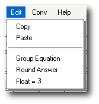

Edit Menu Header
What is the Edit Menu?

Functions of the Edit Menu:
- Edit > Copy Copies the diplayed equation.
- Edit > Paste Pastes contents of clipboard into the current equation.
- Edit > Group Equation Takes the current equation and wraps it in parenthesis. This way all further operations are applied to the entire equation. If the equation is already grouped then it toggles the grouping off.
- Edit > Round Answer Rounds the current answer/equation to the decimal places specified.
- Edit > Float Specifies the number of decimal places to be rounded.
Note: Copy and Paste menus only show up in Internet Explorer where clipboard access by JavaScript is allowed. It won't work in any other browser so therefore it only shows up only in IE.